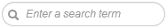
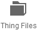

There are many ways to get a 3D model. You can get existing 3D model; create it yourself or hire a designer to do make a model for you.
1. Getting existing 3D model
There is a growing amount of web resources where you can get 3d models.
To my opinion, the best one is
thingiverse.com. It has one of the biggest collections of 3D files, it does not require no registration and all models are free.
Here is what you should do to get a 3D model from Thingiverse collection.
- Press button or navigate to www.thingiverse.com/explore with your browser
- Choose 3D model
- Select a 3D model by clicking on its image, or
- Search for 3D model by name using  control
- Click on or  buttons
- Click on the image or name of supported 3D model
- 3D files supported by 3DView: STL, OBJ, AMF, 3DS, PLY, Collada, CTM, VTK and ZIP
- If Google Chrome is your browser and "Click to open 3D" extension
is installed, your 3D model will be instantly opened in 3DView,
otherwise it will be downloaded to your local disk. If that's the case,
please do the following.
- Run 3DView from Chrome App Launcher.
- Drag and drop your file to the 3DView window or open it with button.
Besides that, you might check out a great article by Kay Tan- "
60 Excellent Free 3D Model Websites".
If you are interested in paid 3D models - you might want to check an article by Justin Slick- "
The Top 10 Places to Sell Your 3D Models Online".
2. Creating 3D model yourself
If
you would like to create a 3D model yourself, there are some great
3D modeling tools for you to consider below. Please make sure you
export your 3D model as STL or other file format supported by 3DView.
| Name & Link | Platform | Description |
| Autodesk 123D | Windows, Mac | Fun, easy to use apps to take you from photos to modeling to making. |
| Blender | Windows, Mac, Linux | A powerful application with full-fledged professional tools, Blender has a wide community and resources to help you learn. |
| Tinkercad | Online Service | With Tinkercad you can design 3D printable, delightful little things. You don’t need any previous design expertise. |
| Sculptris | Windows, Mac | Similar to sculpting a virtual ball of clay, Sculptris lets you model complex organic shapes in great detail. |
| SketchUp | Windows, Mac | Google SketchUp is the easiest, most fun, entirely free 3D drawing tool in the world. |
| Skimlab | Online Service | Skimlab is a 3D sculpting tool made for everyone to make virtual sculpting easier and faster. |
For more tools- check out an article
25 (Free) 3D Modeling Applications You Should Not Miss by Kay Tan.
3. Hiring a designer
If you have a great idea and you need help from professional 3D designer - this is an option for you.
Custom
modeling service providers can make a model for you based on your
idea, sketched drawing, or even physical object. There are many
services that allow freelance artists to find their customers,
publish and sell their work.
Below you can find some resources to find a qualified 3D modeler or service.
| Name & Link | Description |
| iMaterialise | Forum with a list of qualified designers from iMaterialise. |
| Shapeways | List of qualified designers from Shapeways. |
| Dreamsoft | Design 3D Models Based Off of Your CAD Files and Photographs! |
| oDesk | Freelancer search provider. |